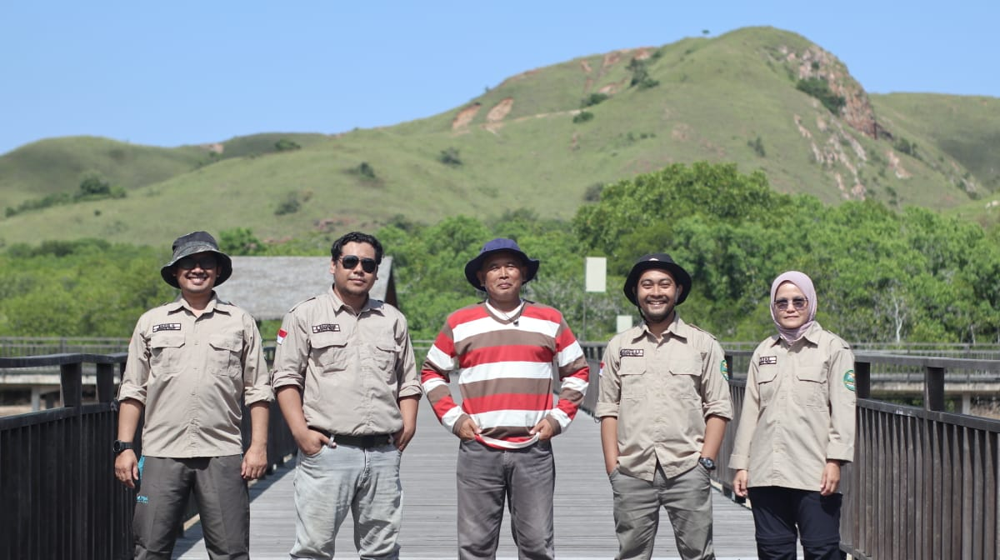
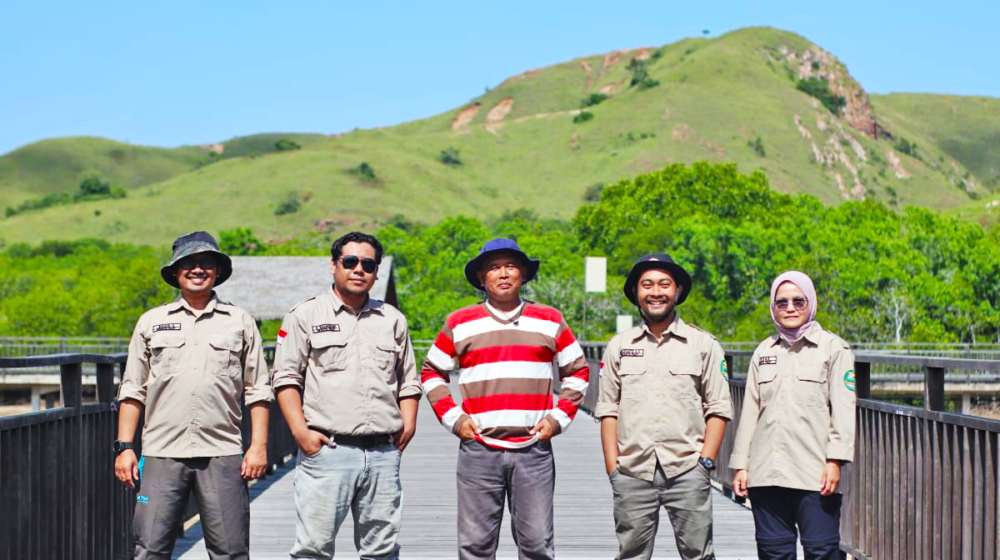

Solusi Geospasial & Lingkungan
berbasis Ilmu Pengetahuan
ALGM Solutions menghubungkan keilmuan akademis IPB University, teknologi penginderaan jauh, dan praktik lapangan untuk menghadirkan analisis data spasial, perencanaan penggunaan lahan, dan pengelolaan sumber daya alam yang akurat, terukur, dan berkelanjutan.


Menjembatani Ilmu, Teknologi, dan Aksi Nyata di Lapangan
ALGM Solutions adalah unit layanan di bawah naungan Satuan Usaha Akademik (SUA) Fakultas Kehutanan dan Lingkungan, IPB University. Kami lahir dari keyakinan bahwa analisis spasial yang andal harus berakar pada metodologi ilmiah yang kokoh — bukan hanya visualisasi yang indah.
Sejak berdiri, kami telah dipercaya oleh kementerian, pemerintah daerah, LSM, dan sektor swasta untuk memetakan tutupan lahan, menyusun rencana pengelolaan hutan, memodelkan erosi, hingga membangun sistem geoportal untuk publik.
Berbasis Akademis
Didukung peneliti dan pustaka IPB
Teknologi Teruji
GIS, Remote Sensing, LiDAR, AI/ML
Lima Pilar Layanan untuk Kebutuhan Geospasial Anda
Dari penelitian dasar hingga implementasi geoportal enterprise, kami menyediakan layanan end-to-end yang dirancang untuk menghasilkan keputusan berbasis data.
Research & Consultancy
Kajian ilmiah, analisis dampak lingkungan (AMDAL), pemodelan spasial, dan penyusunan dokumen perencanaan lahan berbasis regulasi.
Pelajari selengkapnyaSurvey & Mapping
Pemetaan terestris (GPS/GNSS), drone mapping, survei vegetasi, hingga pembuatan peta tematik dengan akurasi tinggi.
Pelajari selengkapnyaGeospatial Training
Pelatihan GIS/QGIS, penginderaan jauh, machine learning untuk spasial, drone mapping, dan manajemen data keruangan.
Pelajari selengkapnyaGeoportal Development
Rancang bangun sistem informasi geografis berbasis web — mulai dari backend PostGIS, tile server, hingga dashboard interaktif.
Pelajari selengkapnyaInstrument Rental — Sewa Alat Survei
Sewa drone mapping, GNSS receiver, Total Station, sensor cuaca, dan alat lab kehutanan dengan pendamping teknisi kami.
Proyek Terbaru Kami
Sebagian kecil pekerjaan yang telah kami selesaikan bersama klien dari sektor pemerintah, swasta, dan organisasi nirlaba.



Dipercaya oleh lebih dari 40 mitra — instansi pusat & daerah, BUMN, dan LSM
Punya proyek geospasial atau kebutuhan analisis lingkungan?
Tim peneliti dan teknisi kami siap membantu Anda menyusun metodologi, melaksanakan survei, hingga menyajikan data spasial dalam format yang dapat dipertanggungjawabkan secara ilmiah.